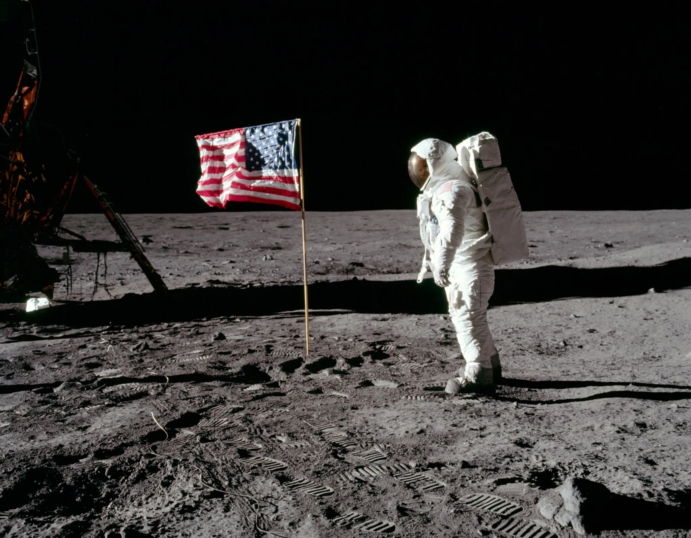
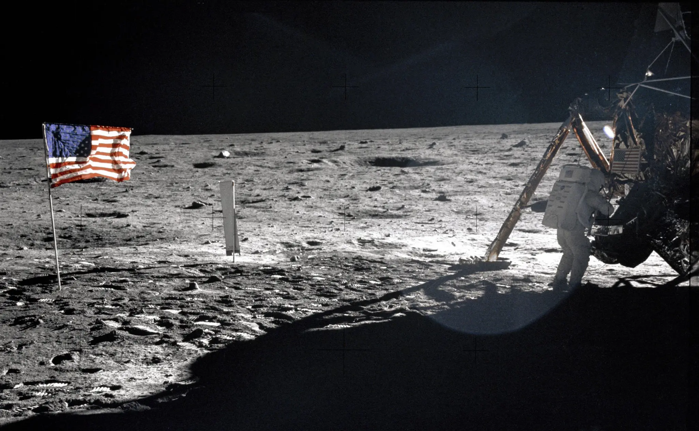

Mission Apollo 11, alunissage et fin
La mission apollo 11 sonne le glas de la course à l'espace, après ça les équipes américaines et soviétiques lancent une coopération, marquant le début d'une nouvelle ère spatiale.
Après apollo 17, aucune autre mission n'a envoyé d'humain sur la lune
 